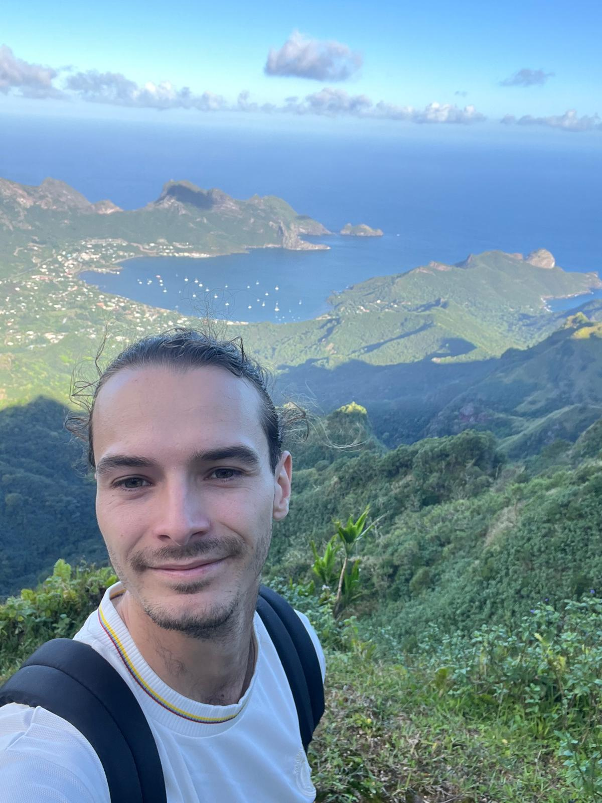

A bit about me
Growing up close to the sea strongly shaped my interests and ultimately guided my decision to pursue a career in ocean science. Today, I am a PhD student in physical oceanography. I hold a double degree from the French engineering school ENSEEIHT and a Master's degree in Ocean, Atmosphere and Climate Sciences. During my studies, I had the opportunity to spend a year in the Canary Islands, where I completed two six-month internships at the IOCAG and Elittoral. I later carried out my Master’s research internship at CSIRO in Australia. I am currently pursuing my PhD at IMEDEA, where my research focuses on mesoscale ocean activity and its role in ocean circulation and variability.
